hey, маркетолог!+4 838
за 30 дней
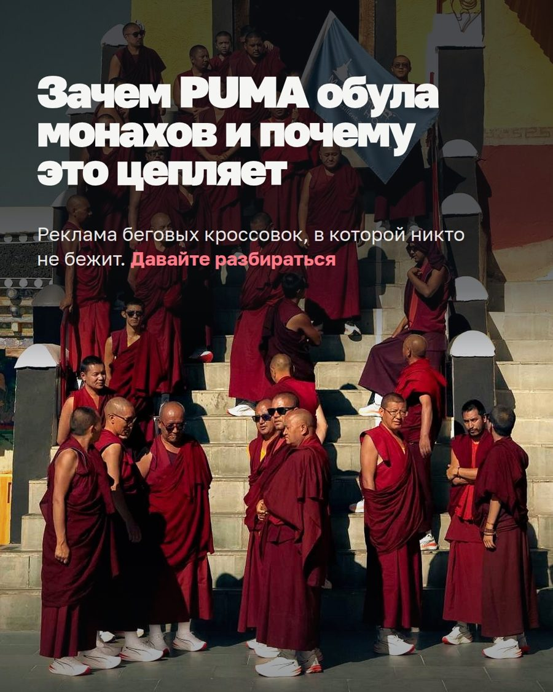
Что внутри AI-маркетолога, сколько трафика дают рилсы и карусели, и кто из участниц уже делает это сам. Все цифры по моему аккаунту — из статистики Instagram на 17 сентября.
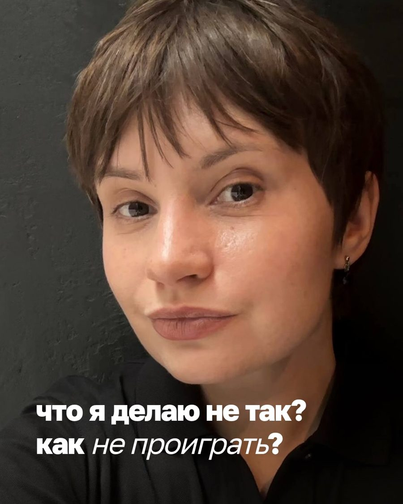


Что внутри AI-маркетолога, сколько трафика дают рилсы и карусели, и кто из участниц уже делает это сам. Все цифры по моему аккаунту — из статистики Instagram на 17 сентября.

Пишет и собирает контент моим голосом и в моей дизайн-системе. Рилс монтирует сам.
Знает продукты, цены и аудиторию. Пишет прогревы, собирает воронку и лендинг.
График, обложки постов, шаги процесса. Зритель видит и человека, и экран.
Монтаж по расшифровке: склейки попадают между фразами.
По три версии на хук уходят в пробные рилсы. Через сутки агент сам снимает цифры: какой хук держит.
Все рилсы ускорены. Субтитры печатаются по словам, с курсором.


«Берём 2, 3, 6, 7, 8, 9, 15. На обложку 5. Верстай»
Общее у всех больших каруселей: год, имя, профессия и конкретное событие в первой строке. Никаких «5 признаков». Для агента это не пожелание, а правило в базе знаний, поэтому он не сползает в «полезный контент».
«Каждый рубль отбивается в сто тысяч раз»
«Манус сделал мне сайт с онлайн-записью — клиенты просто визжат от восторга, как им удобно»
«Агент подключился к Телеграму, собрал все мои голосовые и сделал полный клон голоса. Я в шоке»
«Пятьдесят пять чатов он с меня за сутки снял — в десять раз больше, чем до этого»
«С методологом, целой командой писали тексты, снимали рилсы — в итоге ноль клиентов»
За три недели: второй бот, сайт, к сайту подключены Google-отзывы клиентов
«Вспоминаю, когда появился интернет, компьютер, потом ютуб — вот примерно то же самое»
«Даже на клиентские проекты сейчас собираю. Это гениально»
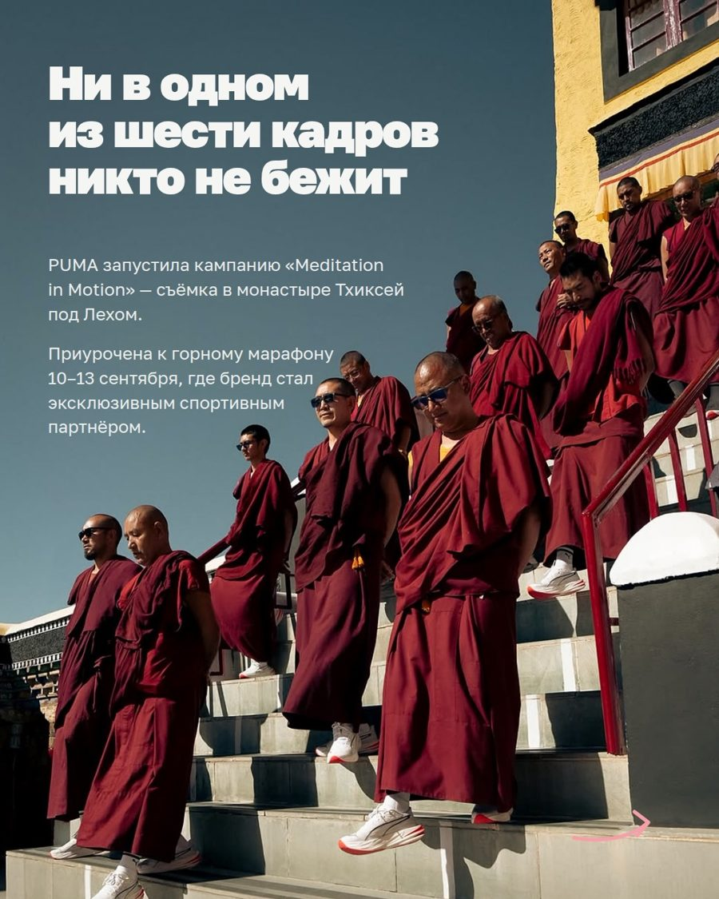
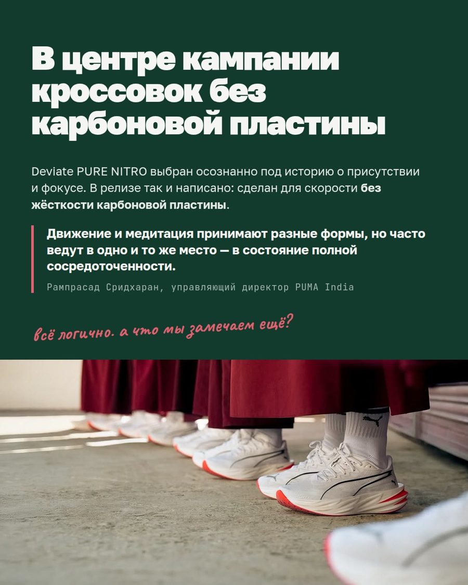
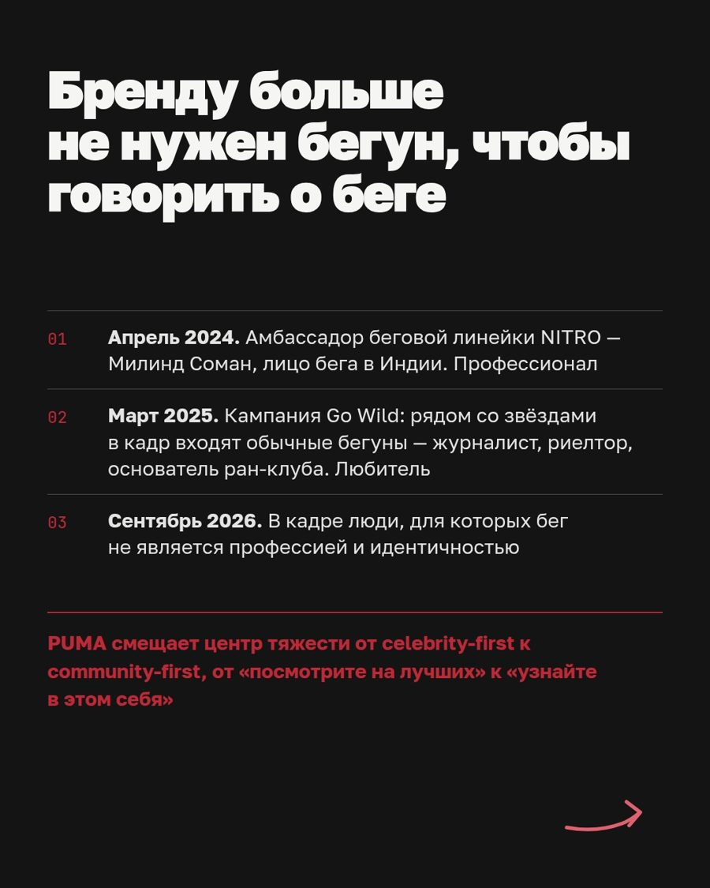
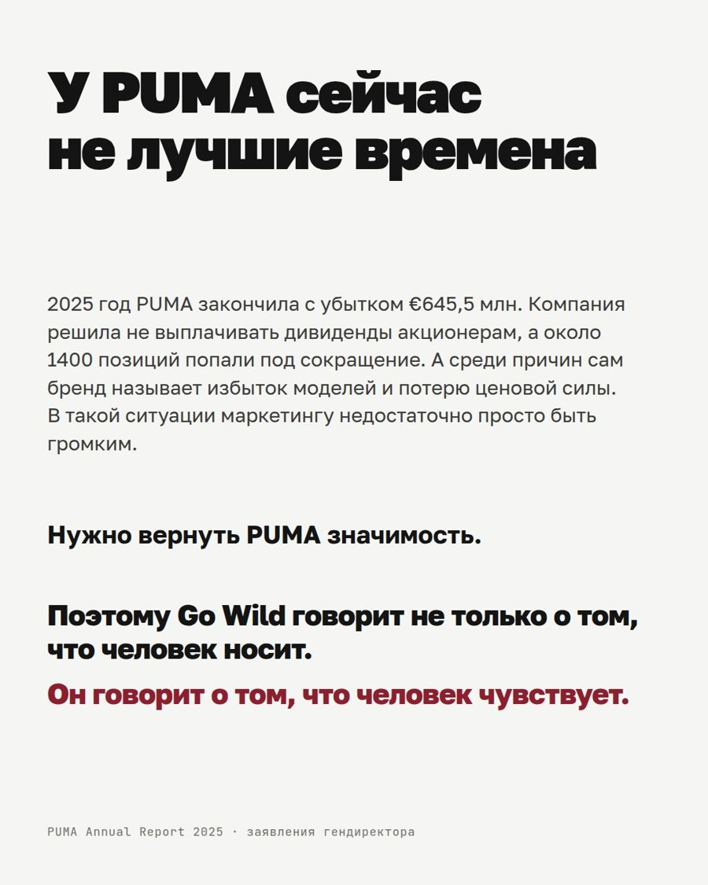
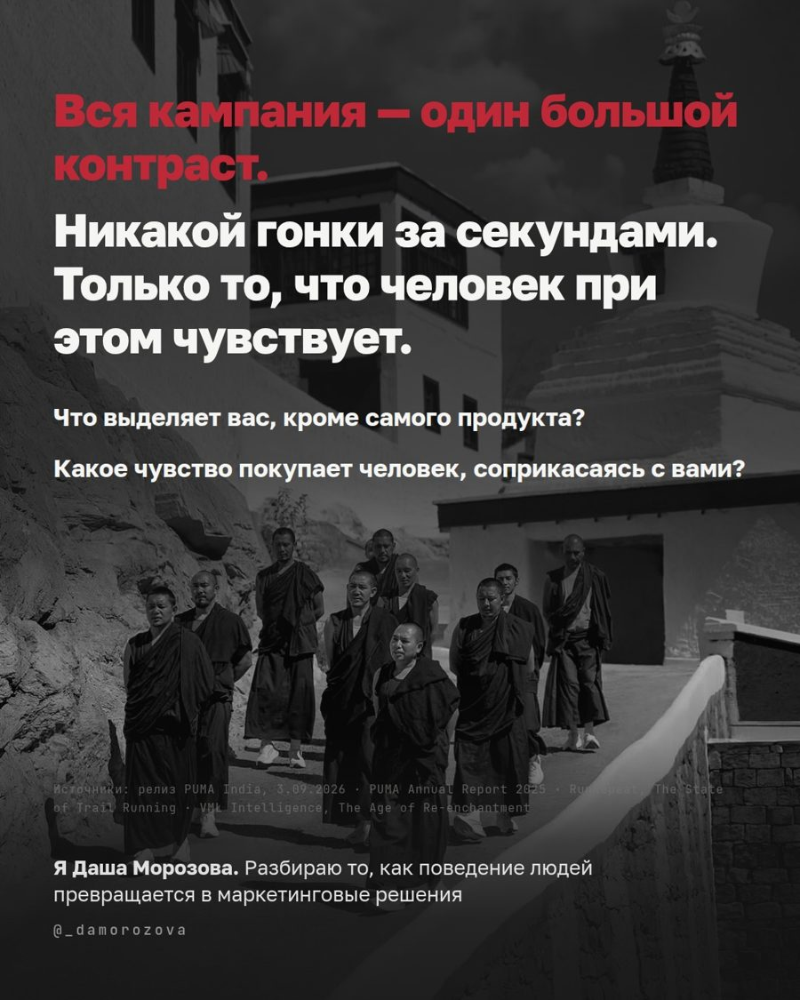
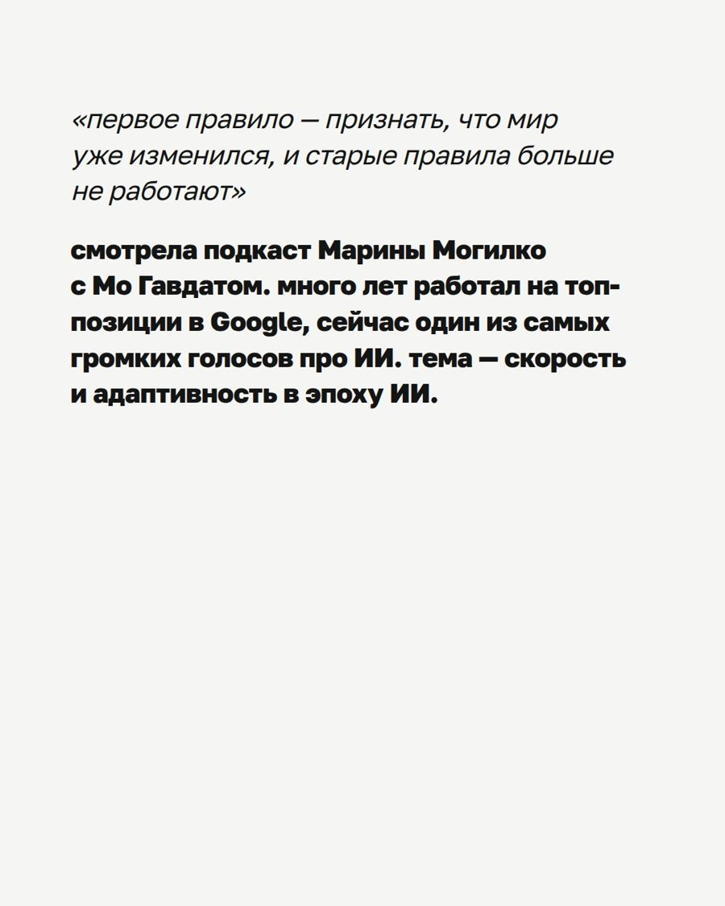
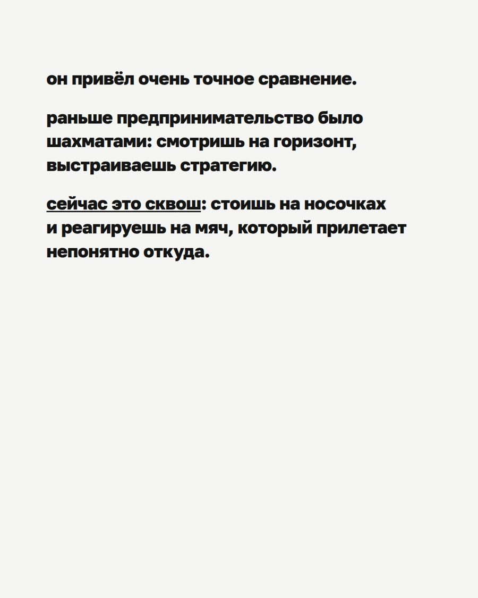
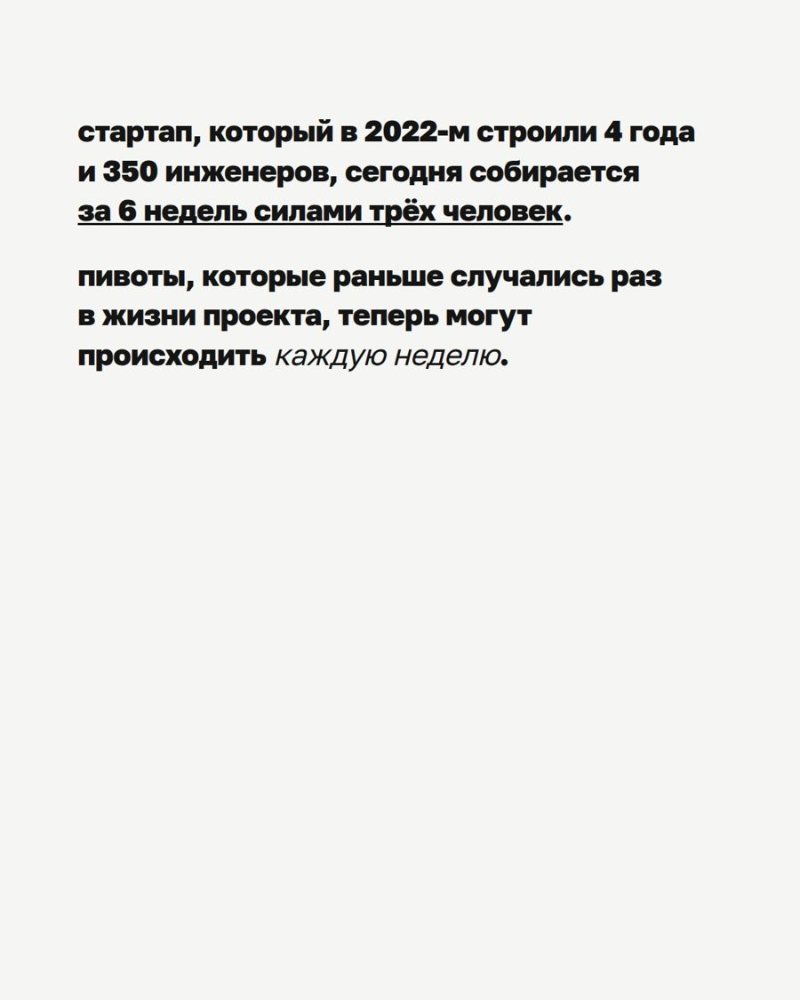
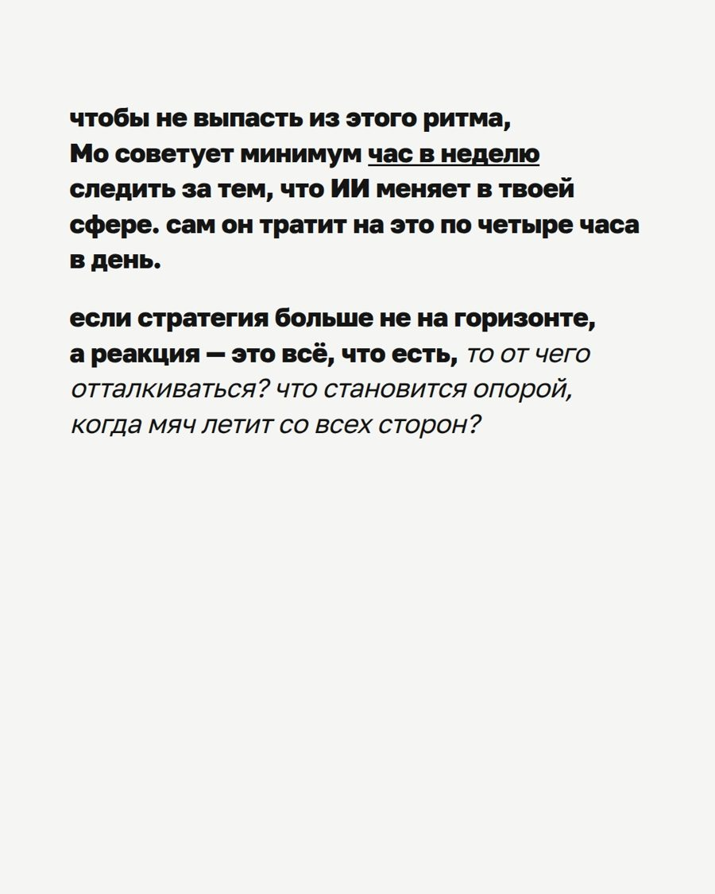
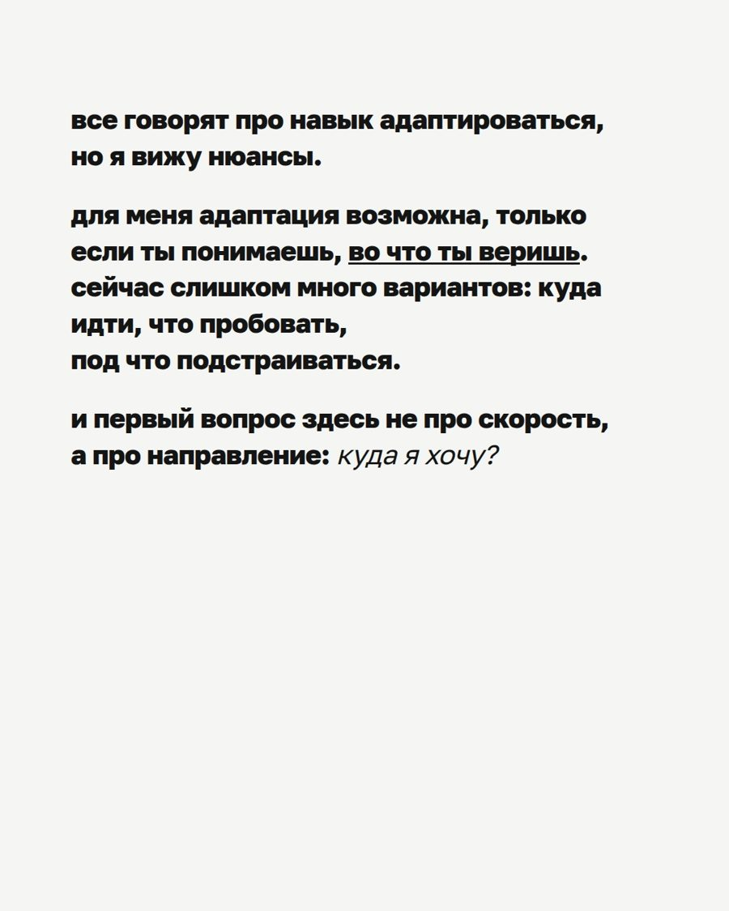
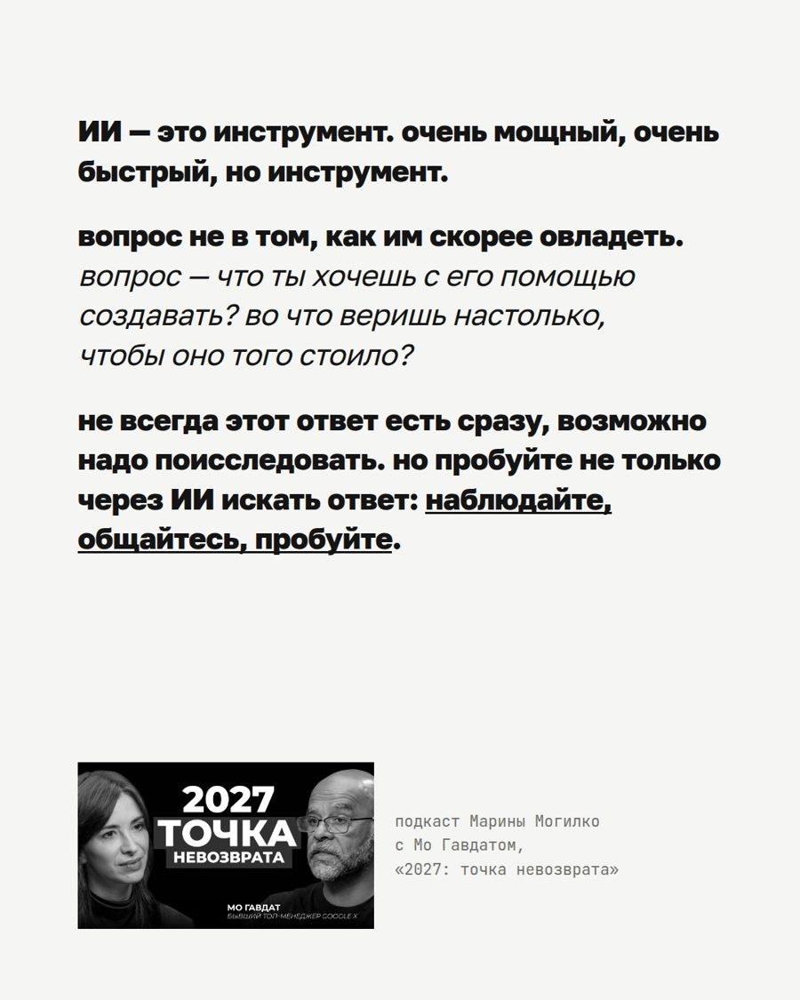
«Я бы вовсе не полезла делать карусель по свежей новости день в день, потому что руками собирать совсем не секси»
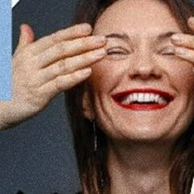
248 000просмотров за неделю, +1 000 подписчиков, 70 000 ₽ · Галина Фёдорова, психолог 1 000 000просмотров на одном посте · Маша Херд, про тело и эмоции
1 000 000просмотров на одном посте · Маша Херд, про тело и эмоцииДальше — живое демо: агент получает задание голосом прямо в эфире.